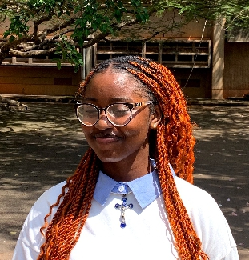

CYNTHIA EKWE
FRONT-END DEVELOPER

/
Career Objective
- Passionate and driven Computer Science student with a strong foundation in HTML and CSS.
- Eager to learn and explore the digital world.
- Seeking opportunities to expand technical skills and contribute to innovative projects.
Education
- University of Nigeria Nsukka (2022-2026)
- Federal Government College Lagos (2016-2022)
- Dominican Group of Schools (2010-2016)
Work Experience
- Currently working in Globaypay Nigeria
Skills
- Cybersecurity Fundamentals
- Network Packet Analysis
- HTML and CSS
- Problem-solving and Logical Thinking
- Crytography OSI and TCPIP Models
Extracurricular Activities and Leadership
- Head Girl, Dominican Group of Schools
- Class Representative, Federal Government College
- STEM Club and JET Club Member
- School Sports Team Member
- Member of Dynamic Dance Crew
Volunteer Experience
- National Association of Computing Science Student (NACOS) Convention
(2024) - Assisted in event coordination
Certification
- Certificate of Excellence in Cybersecurity Fundamentals (Alison - Toolkit for Cybersecurity Professionals)
My Hobbies
Contact Me